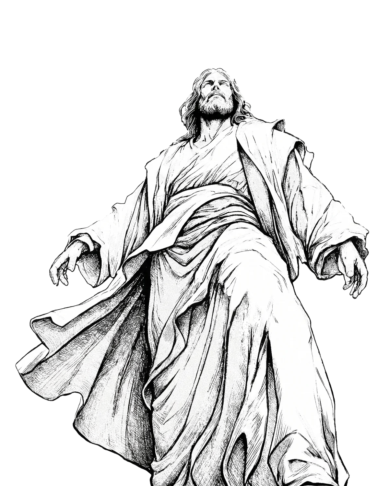

MOC Psalm 23
Een implementatiegroep voor mannen in Rotterdam. Elke laatste zaterdag van de maand. An implementation group for men in Rotterdam. Every last Saturday of the month.
Onze FundamentenOur Foundations
De Vier PijlersThe Four Pillars
Fundamenten voor een onwrikbaar karakter, geworteld in geloof en actie. Foundations for an unwavering character, rooted in faith and action.
Brood brekenBreaking bread
Gemeenschap en fellowship in de puurste vorm. Community and fellowship in its purest form.
"En zij volhardden in de leer van de apostelen en in de gemeenschap, in het breken van het brood en in de gebeden." "And they continued steadfastly in the apostles' doctrine and fellowship, in the breaking of bread, and in prayers."
Handelingen 2:42Acts 2:42
Verdiepen in het WoordDeepening in the Word
Studie, begrip en toepassing van de absolute waarheid. Study, understanding and application of the absolute truth.
"Uw woord is een lamp voor mijn voet en een licht op mijn pad." "Your word is a lamp to my feet and a light to my path."
Psalm 119:105
Fitness
Fysieke kracht als weerspiegeling van mentale en geestelijke discipline. Physical strength as a reflection of mental and spiritual discipline.
"Uw lichaam is een tempel van de Heilige Geest… verheerlijk dan God met uw lichaam." "Your body is a temple of the Holy Spirit... therefore glorify God in your body."
1 Korintiërs 6:19-201 Corinthians 6:19-20
Wandelen in bewustzijnWalking in awareness
Leven met intentie, waakzaamheid en verantwoordelijkheid. Living with intention, vigilance and responsibility.
"Want wij wandelen door geloof, niet door aanschouwen." "For we walk by faith, not by sight."
2 Korintiërs 5:72 Corinthians 5:7
Rotterdam · Elke laatste zaterdag
Stop met toekijken.
Begin met toepassen.
Stop spectating.
Start implementing.
Kom naar de volgende bijeenkomst. Elke laatste zaterdag van de maand. Join us for the next gathering. Every last Saturday of the month.